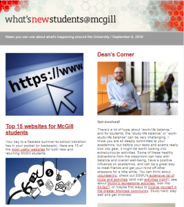
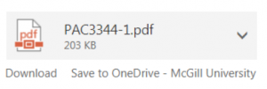
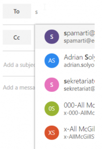

三年前，我来交通大学报到。除去办理住宿，领军训服之外，最早做的一件事情就是办理了一张属于自己的校园卡。这张校园卡伴随了我大学三年，并将陪我到顺利毕业。有了这张校园卡，就可以畅通无阻的进出图书馆，宿舍楼，实验室；就可以用来在学生超市购物，作为身份验证等等。
在麦基，校园卡当然也极为重要。但比校园卡更加重要的，可能就是学校的邮件系统了。在领到校园卡之前，Registation Office就首先给我分配了一个用自己名字命名的麦基邮箱。与交大存在感极弱的邮箱相比，麦基邮箱起到了校园生活中极其重要的作用。三个月来，我收到了很多来自麦基的“官方邮件”，他们真实的反映了麦基的校园生活。
首先，先看一条麦基校规，明确地指出邮箱的地位。
麦基邮箱承担的最重要的作用当然是信息通知。有些通知很常见，有些通知则很有意思。
下图是在18Fall学期开学发给每个学生的邮件。

其中介绍了许多新生需要注意的内容，比如
- Top 15 Websites for McGill students
- McGill’s new smoking policy
- Contact for all things harassment, discrimination
- Registration suggestion for SKILL
- Leadership Development
- …
如果是一个有心的学生，这些内容应该会有极大的帮助。
下面一封邮件是关于校园安全的。可见麦基对学生安全的关心。
关于走夜路：请走学校指定的安全路线。如果还是不放心的话，请联系我们，我们陪行！看见可疑情况，请联系以下人员…
Some of the best ways to stay safe on and around campus are to get to know McGill’s designated, well-lit night routes, to be cautious about overindulging, and to keep an eye out for the wellbeing of those around you. For a friendly hand getting home safely at the end of the night, don’t hesitate to contact WalkSafeat 514-398-2498 or DriveSafeat 514-398-8040. If you see or experience something that has you concerned, call McGill Security Services at 514-398-3000 (for downtown) or 514-398-7777 (on Macdonald campus). For emergencies, call 911. Security Services can also be contacted for escorts on or near the downtown campus outside WalkSafe’s hours.
我刚来的时候，临近一桩实验楼发生了一起火灾，下面这封邮件是对这场火灾的描述。
医学楼发生了火灾，所幸没有伤亡！那里还很危险，现在请别过去。有急事要去的话，请联系我们。感谢帮忙救火的那些人。
On the evening of July 13, a fire was reported on the outdoor terrace of the McIntyre Medical Building. Authorities arrived quickly and the fire was soon extinguished. No one was injured. We ask that people continue to avoid the area.
McIntyre remains closed until further notice. The damage is being assessed and remediation efforts have been underway since late last night. We continue to work to minimize the impact on research, classes and other operations; faculty, staff and students who work or attend classes in the building will receive further instructions and updates via e-mail.
Requests for entry into the building to attend to urgent research needs must be communicated to the Security Operations Centre at 514-398-3731, and will be evaluated on a case-by-case basis – the first priority will be ensuring the safety of all involved. Additional details will be posted to the McGill website.
Damage appears to be limited to the lower floors and basement on the south side of the building, and resulted largely from water deployed during firefighting efforts. Some research may be affected, but thanks to swift action by firefighters, the rare holdings collection of the Osler Library of the History of Medicine appears to be undamaged. Other library holdings sustained some damage.
I would like to express my gratitude to our front-line Campus Public Safety and Facilities Operations teams and Montreal emergency authorities for their swift intervention.
然而，安全问题并非都是显而易见的，下面这封邮件说出了一个很敏感的问题。
麦基极为重视学生安全。去年我们就颁布了关于避免学生和老师之间的“关系”的文件。但还不够！我们现在专门任命了一个人来负责避免这些行为。他的职责就是找出那些被我们忽视的隐患。
McGill is committed to providing a learning and working environment for all that is respectful, safe, and inclusive. Our University’s efforts in connection with sexual violence prevention and response are critical to delivering on this commitment.
As the fall semester gets underway, I write with an update about these efforts.
Last spring, in addition to establishing new Guidelines on Intimate Relationships between Teaching Staff and Students, I announced that McGill would be appointing a Special Investigator charged with investigating all reports of sexual violence on campus. I am delighted to announce the appointment of Maître Caroline Lemay to this role. Me Lemay’s appointment was made pursuant to a careful process overseen by a small University committee that included representation from the Students’ Society of McGill University (SSMU).
当然，我们要掌握一些自救技能…
女子防身术，原价998，现在只要20刀！
Sign up now for RAD, a self-defense course for women taught by McGill Security Services. The one-day basic training workshop is offered to all female students, faculty and staff at a cost of only $20. There will be two courses taught downtown this semester: Friday, Sept. 21 (9 a.m. to 5 p.m.) and Friday, Sept. 28 (9 a.m. to 5 p.m.). The workshops will take place in the Activity Room of the McGill sports complex. Once you have signed up, you will receive more information on the course. Get more information and register here.
以上都是关于安全的通知。麦基的邮件系统还负责很多其他类型的通知。比如，课程的注册确认信，考试确认信，还有一些学习资料的发放。
关于考试的重要信息，不认真读就等着挂科吧！看在你复习这么辛苦的份上，给你些江湖救急药！
Please read carefully this email prior to the start of the online test. The online exam activation period is strictly limited; starts this today (before 3:15PM), and ends at exactly 11:00PM on Thursday, August 23. In other words, you have until Thursday evening to complete the online test. Failing to comply will result in the absence of WHMIS 2015 certification.
In preparation for the online open-book exam you can study & use the course notes attached to this email.
还有就是，图书馆愉悦讨论室的确认信。现在交大好像也可以预约图书馆讨论室了。通过这封确认信，你可以方便的取消预约。
图书馆讨论室预约成功！但是累了就在家睡觉吧，点以下链接取消就好。
The following has been confirmed:
HSSL – RM-07A: 7:30pm to 9:00pm Monday, August 20, 2018
Directions:
HSSL – RM-07A: Redpath Library Building, Main floor
To cancel this booking visit: https://libraryrooms.mcgill.ca/equipment/cancel?id=cs_VpAp2txMcGill Library
当然还有一些特别的通知。
报复老师的好机会！XXX教授任期快结束了,到底要不要续约呢？你们来决定，快告诉我你们的想法。
Professor XXX will end his first five-year term as Dean of the Faculty of Education on June 30, 2019. Pursuant to the University Statutes, an Advisory Committee to the Principal has been struck with respect to the possible renewal of Professor Rassier’s appointment.
The composition of the Committee, which I chair, is as available at: https://www.mcgill.ca/secretariat/advisory/dean-faculty-education
In order to assist in its deliberations, the Advisory Committee welcomes any written comments by members of the McGill community with respect to the possible reappointment of Professor XXX as Dean of the Faculty of Education. All comments will be treated in the strictest confidence by the Committee. Comments should be addressed to Professor XXX, Provost and Vice-Principal (Academic), c/o Secretary-General, University Secretariat, James Administration Building, 845 Sherbrooke Street West, Room 313, Montreal, QC H3A 0G4, or by e-mail to: advisories@mcgill.ca.
还有校长的亲自来信。
大家好，我是校长。在我的地盘，大家尽情玩。有啥不开心告诉我，毕竟我能为所欲为，（逃
I would like to welcome you all to the new academic year. There is a special energy that fills our campuses at the start of the fall semester. The coming months will be filled with your ideas and projects, and I am excited to learn about them.
Even as the semester gets busy, I encourage each of you—whether you are new to McGill or a long-time member of our community—to make time to explore our University and discover everything it has to offer. Whether you are interested in sports or science, music or medicine, there is always something inspiring, thought-provoking or simply fun to do at McGill. Like our wonderful home city of Montreal, McGill’s campuses abound with talented, creative people who are doing amazing things. Please support them.
I look forward to our working together as a community. If you have any thoughts to share throughout the year, you can reach me at XXX@mcgill.ca. Welcome back!
以上皆为玩笑，作为加拿大本科教育第一名校（约等于加拿大的清华北大吧），对于好学生当然有更高的要求和更好的福利。
荣誉学位（约等于中国的实验班）：来到这里，只要学不死，就往死里学！生命在于挑战，欢迎加入。
MCGILL HONORARY DEGREES
McGill honorary degrees are awarded to distinguished individuals in recognition of a lifetime of scholarly, scientific or artistic achievement, or for exceptional contribution to the public good through professional or philanthropic activity. Individuals selected to receive an honorary degree will have a record of contribution and accomplishments that positions them to be an inspiration and role model to our students, graduates and our university community, and to enhance the reputation of McGill.
Consistent with the primary criteria of excellence of achievement and exceptional contribution, the University may honour individuals whose outstanding contributions to their fields or to society may not yet have been widely recognized, as well as those who have received recognition.
Through its recommendations of outstanding individuals, the Committee will endeavor to reflect the intellectual and cultural diversity of the McGill community and the broader communities in Quebec and Canada, as well as the international impact and reach of the University. In order to make it possible for the Committee to achieve this goal, I encourage you to nominate candidates who reflect the diversity of our larger society.
The award of an honorary degree is an important statement of recognition and respect from the University to the broader community. It is also an excellent way to build special relationships between our faculties, departments and outstanding individuals who symbolize the best of our institution.
对于好学生，奖学金当然是标配。
学霸看过来，这里是你们想要的奖学金信息！免费去哈佛留学，还有留在哈佛的机会（毕竟麦基是哈佛加拿大分校）！对中国文化感兴趣，没问题，欢迎做客清华大学！
Rhodes Scholarships 2019
Students with outstanding intellect, character, leadership, and commitment to service should consider applying for the Rhodes Scholarship.
Eleven Rhodes Scholarships will be available to Canadian students in the fall of 2018. These scholarships are tenable at Oxford University and are granted for two years with the possibility of extension for a third year. The winners will be required to commence their studies in October 2019.
Schwarzman Scholars 2019
Schwarzman Scholars, inspired by the Rhodes scholarship, is a program designed to help future leaders meet the challenges of the 21st century and beyond by preparing them to better understand China’s culture, economy, governance and motivations.
Scholars will study for a fully funded one-year Master’s degree in public policy, international relations, or economics and business at Tsinghua University, one of China’s most prestigious institutes of higher education.
除此之外，麦基邮件还有一些其他功能，比如云打印：给特定邮箱发文件就可以去图书馆打印出来。

还有发布学生希望的放假信息…
魁省大选：关我何事？大选当天所有课程/考试/实验取消，请各位奔走相告。
Quebec General Elections are taking place on Monday, October 1, 2018. Polls will be open from 9:30 a.m. – 8:00 p.m. Below, you will find important information for both students and staff.
Students
Please be advised that all classes, laboratories and examinations in all Faculties – as well as in the School of Continuing Studies – are cancelled on Monday, October 1, 2018. This is accordance with Section 306 of the Election Act. Note that students currently engaged in internships or clinical rotations should consult their supervisors and follow the specific requirements of the institution in which they work.
这里我想说一个麦基邮箱的贴心功能。就是他真正把所有麦基的学生和老师联系成了一个社区。何以见得？发送邮件时，只要你输入几个字母，他就会联想出相关的学生和教师邮箱。

可见，邮箱真的是渗透到了麦基大学生活的方方面面，有着举足轻重的作用。因为邮箱，同学养成了查邮件的习惯，发邮件当然也就变得理所当然了：在我们实验室里，一些重要信息的发布都是通过邮件列表，这在之后的文章里再说。
与麦基相比，交大学生一般没有使用校园邮箱的习惯。我觉得一方面是因为没有校规规定重要的信息需要通过邮件发送，另一方面是交大的邮箱系统真是…不知道招标给了一个什么不知名的公司做的系统，用起来太扎心了。倒不如学习McGill，直接使用Outlook作为邮箱程序，同时还可以和Office365打包使用，不能更方便。
交大的通知一般通过QQ群发布，这也有利有弊。利在方便文件传送与存储，弊在消息容易被刷没，而且有些人因为各种各样的原因并不使用QQ。当然，McGill也有自己的Facebook群组，应该可以解决文件相关的问题，只不过我没有加入，不太清楚罢了。

出了国的时候，注册当天就给每人通知个人的学校邮箱是什么，然后各种通知都是在邮箱发过来的，很正式。再想想本科时国内学校压根就没有我们的学生邮箱，各种通知都是短信短信。。。
我说一下我母校的校园邮箱。仅限在职教师、硕士和博士研究生申请。对于硕士和博士研究生，首先下载申请表和协议两份，填好打印出来，学生签字、导师签字，学院盖章，复印好身份证、研究生证，并携带原件，到学校网络中心申请。申请下来后，空间大小是500M，附件限制2M，有效期到研究生证规定的毕业时间，到期后自动销毁。
在实验室使用的网络账号申请方法一样，但是毕业后不会自动销毁，带宽2M。
据说国外不像我们这样，微信QQ捆着你24小时开机，人家邮件会24小时回复，但是休假时休想用邮件打扰。
感谢来访。我们学校的邮箱应该毕业之后不会销毁，因为我看到邮箱里经常发校友周刊什么的。外国学生对邮箱的依赖性在我看来是大于国内的。重要的邮件基本一天之内恢复。如果是休假，有的国外老师会设置自动回复，就说“现在休假，可能回复不及时”之类的。
很强了，学校的服务器和机房一般都是自建的吧，交大我不知道，反正我们学校的邮件系统ftp系统，学籍注册管理等都是学生和老师一起写的，我还参加了我们学校的服务器维护和校园网客户端的开发工作，老师懒的就是秉持能用就行的，所以一遇到流量高的就崩是常事 😆 特别是选课系统2333不过也是，国内高校都喜欢用QQ吧，不过公司还是喜欢邮件联系，可能也是历史原因 😛
感谢来访。好厉害，竟然帮学校维护邮件系统！我们学校的邮件系统基本处于荒废状态。。。我现在还没有走出过象牙塔，所以并不是很清楚企业是什么样的。